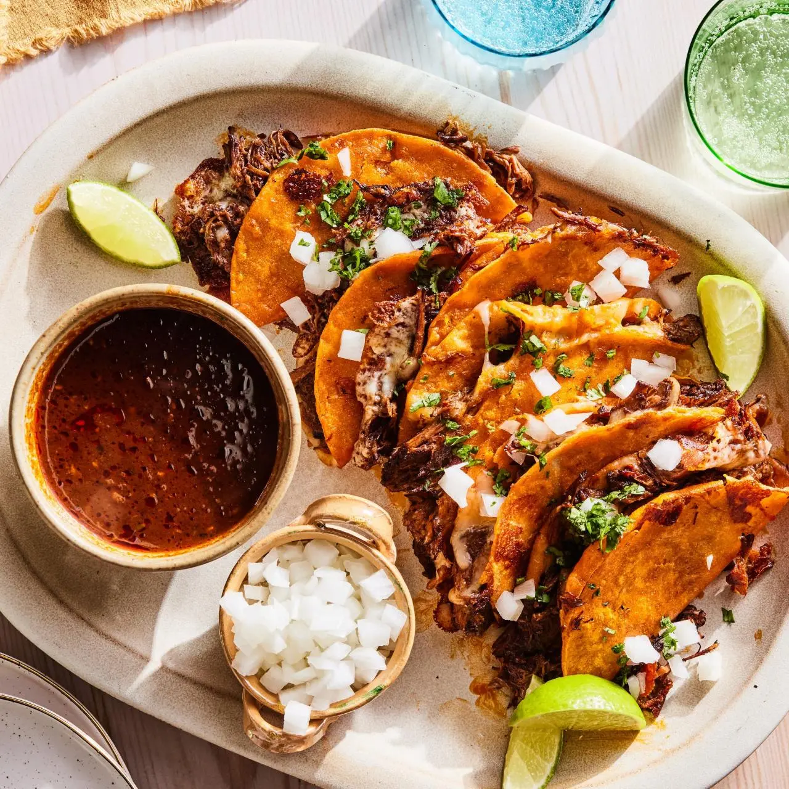

Quesabirrias

Description
Quesabirrias are crispy Mexican tacos filled with slow-cooked birria beef and melted cheese. The tortillas are dipped in flavorful birria broth before being grilled, giving them their signature red color and crispy texture.
They are traditionally served with a small bowl of consommé for dipping, making every bite juicy, cheesy, and packed with bold flavors.
Ingredients
- 2 pounds beef chuck roast
- 2 cups beef broth
- Dried guajillo chilies
- Dried ancho chilies
- Onion
- Garlic
- Tomatoes
- Mexican oregano
- Ground cumin
- Cinnamon
- Corn tortillas
- Oaxaca cheese
- Chopped cilantro
- Diced onion
- Lime wedges
- Salt and pepper
Steps
- Prepare the birria broth by blending the chilies, tomatoes, onion, garlic, and spices.
- Cook the beef in the broth until it becomes tender and easy to shred.
- Shred the cooked beef and reverse the broth.
- Dip each tortilla into the top layer of the broth.
- Place the tortilla on a hot skillet.
- Add cheese and shredded beef.
- Fold the tortilla in half and cook until crispy on both sides.
- Repeat with the remaining tortillas.
- Garnish with onion and cilantro.
- Serve with warm consommé and lime wedges.
Home